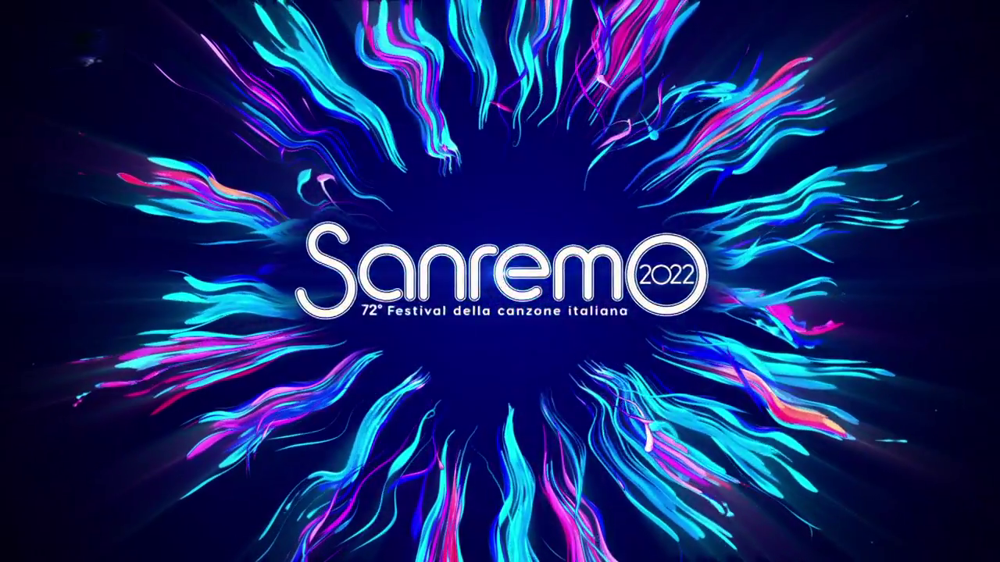

Museo di Sanremo 2022
Noto come Festival della Canzone Italiana si svolge ogni anno, dal 1977, al Teatro Ariston: è una gara canora alla quale partecipano interpreti della musica leggera che propongono canzoni inedite di autori italiani, pena l'esclusione della gara
Com'è nato Sanremo?
Seconda Opera
Terza Opera
